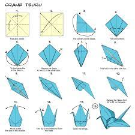
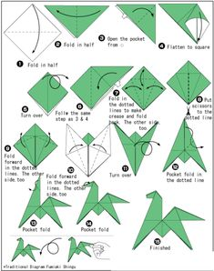
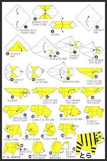
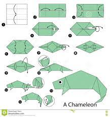
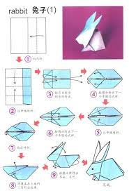

BASICS
How to make an origami fish

Click the image to see the video
Interesting facts about fishes
The amazing Spotted Climbing Perch is able to 'gulp' oxygen from the air and can crawl over land using its strong pectoral fins in search of water.
Did you know, American Lobsters have longer life spans than both cats and dogs, living over 20 years.
Catfish have over 27,000 taste buds, whereas humans have only 9,000.
How to make an origami dog

Click the image to see the video
Interesting facts about dogs
Their sense of smell is at least 40x better than ours.
Some have such good noses they can sniff out medical problems.
Dogs don't sweat like we do.1
How to make an origami crane

Click the image to see the video
Interesting facts about cranes
Cranes are known as the world's tallest flying birds.
The Demoiselle Crane is the smallest crane species, while the Sarus Crane is the tallest crane species.
They can grow tall up to 1-1.8 meters.
How to make an origami frog
Click the image to see the video
Interesting facts about frogs
There are over 5,000 species of frog.
Frogs don't need to drink water as they absorb it through their skin.
A frog's call is unique to its species, and some frog calls can be heard up to a mile away.
PROFESSIONAL
How to make an origami horse

Click the image to see the video
Interesting facts about horses
Domestic horses have a lifespan of around 25 years.
Horses can sleep both lying down and standing up.
A 19th century horse named 'Old Billy' is said to have lived 62 years.
How to make an origami tiger

Click the image to see the video
Interesting facts about tigers
The Bengal tiger is the most common tiger.
Tigers live between 20-26 years in the wild.
Tigers are the largest cat species in the world reaching up to 3.3 meters in length and weighing up to 670 pounds!
How to make an origami chameleon

Click the image to see the video
Interesting facts about chameleon
ALMOST HALF OF ALL KNOWN SPECIES LIVE IN MADAGASCAR.
THEY MAINLY CHANGE COLOR IN ORDER TO COMMUNICATE OR REGULATE BODY TEMPERATURE.
UNLIKE MANY LIZARDS, CHAMELEONS CAN'T REGROW THEIR TAILS.
How to make an origami rabbit

Click the image to see the video
Interesting facts about rabbit
A baby rabbit is called a kit, a female is called a doe and a male is called a buck.
Rabbits are very social creatures that live in groups.
Rabbits perform an athletic leap, known as a 'binky', when they're happy — performing twists and kicks in mid air!